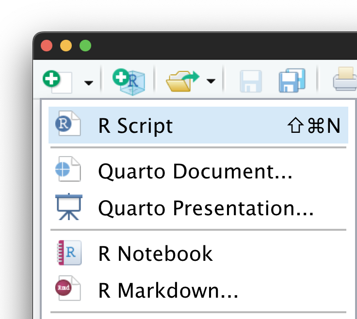

逆順で理解する R Markdown Presentation
岩嵜 航 (Watal M. Iwasaki, PhD)

@heavywatal
東北大学 生命科学研究科 進化ゲノミクス分野 特任助教
(Graduate School of Life Sciences, Tohoku University)
(Graduate School of Life Sciences, Tohoku University)


PowerPoint無理、ウェブブラウザでプレゼンしたい
Hello, R Markdown!
3 * 14
ggplot(diamonds) +
aes(carat, price) +
geom_point(aes(color = clarity, size = cut))
## [1] 42
普通のテキスト
Rコード
実行結果
図
ウェブブラウザでスライドショーを表示する仕組み
<html>
<head>
<link rel="stylesheet"
href="style.css">
</head>
<body>
<section><h2>見出し</h2>
スライド1 本文
</section>
<section><h2>見出し</h2>
スライド2 本文
</section>
<script src="reveal.js">
</script>
</body>
</html>
しかし、生のHTMLを手で書くのは大変…
書きやすいMarkdownからHTMLに変換
## スライド1 見出し
スライド1 本文
---
## スライド2 見出し
スライド2 本文
---
## コードブロック
```
3 * 14
ggplot(diamonds) +
aes(carat, price) +
geom_point()
```- Markdown
- 軽量マークアップ言語の代表格。
- 微妙に異なるflavorが乱立。
CommonMark, GFM が標準的な位置づけ。
- Hugo
- 超高速 Markdown → HTML スペシャリスト。
- CommonMark, GFM 準拠 + 拡張。
- ウェブサイト全体を作る前提。初期設定が難関。
- Pandoc
- 様々な形式を相互変換できるジェネラリスト。
- Pandoc’s Markdown が独特。
CommonMark, GFM も扱えるけど。
コードブロックの実行結果も表示できたら嬉しい…
R Markdownのコード部分を実行してMarkdown化
---
title: "Goodbye PowerPoint"
format: revealjs
---
Hello, R Markdown!
```{r hello}
3 * 14
ggplot(diamonds) +
aes(carat, price) +
geom_point()
```
```
## [1] 42
```
<img src="figure/hello-1.png">
- R Markdown (.Rmd, .qmd)
- 最上部にメタデータを記述。
文書全体の設定など。 - 実行してほしいRコードを
コードチャンクに書く。
knitr 🧶 でコードチャンクを実行
↓
- 普通のMarkdown (.md)
- 実行結果が編み込まれる。
- 画像ファイルとそこへのリンクも。
すべて繋がった。結果はスライド#2。簡単に実現する方法は？
R Markdownからスライドショーを作る枠組み

- Quarto Presentation 🟢 (v1.0 in July 2022)
.qmd|> knitr |> Pandoc |> reveal.js- RStudio, VS Codeがぜーんぶ面倒みてくれる！
- R Markdown… → Presentation 🟡
.Rmd|> knitr |> Pandoc |> ioslides, Slidy- デフォルトでは動作が鈍い、中央寄せ。
- heavywatal/slides 🔴 非推奨
.Rmd|> knitr |> Hugo |> reveal.js- 習得・設定が済んでしまえば速いけど…
- Quarto無き時代の俺俺フレームワーク。
- 訊かれるので一度説明しておきたかった。
- xaringan 🥷 Presentation Ninja
.Rmd|> knitr |> remark.js
補遺
- 見た目を微調整したければCSS(+HTML)の知識は必要になる。
- 人から見えるように公開したければ出力ファイル一式をアップロード:
- 大学や会社のサーバー
- 各種サービス: e.g., GitHub Pages
- RStudioからPublishボタン: RPubs, RStudio Connect
- 自分のコンピュータでプレゼンするだけなら http://localhost/ で十分。
- HTMLスライドをPDF化したい場合はdecktapeが使える。
- Quartoは多機能。
- 入力にはJupyter (.ipynb)も使える。
- HTMLスライド以外もいろいろ出力できる。 See Gallery.